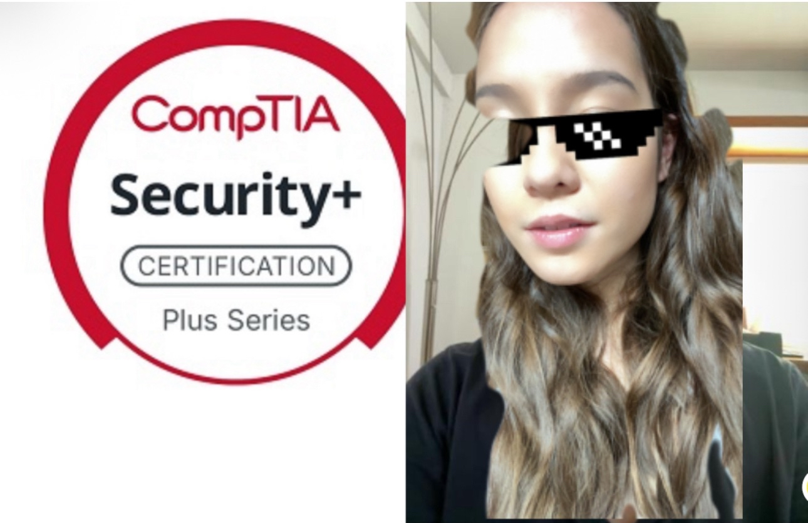

MAYA DOUGLAS
MY COMPTIA SECURITY+ JOURNEY
CATEGORY: CYBERSECURITY

I always thought that cybersecurity certs were more of a subculture than anything else. Maybe I went to DEFCON too early in my career but the subset of people who jumpscared me with, “What certs do you have?” made me assume that this is another one of the cyber-machismo things that I had to ignore. I was a goth kid - being part of the in-crowd clearly never appealed to me.
While I still think that I’m at least kind of right about the social currency portion, I had two years of experience which meant that the ‘baseline cert’ had to be a joke to study for. Right? But I guess CompTIA has their CompTIAisms and no amount of time in an office could shield me from that.
So here are some thoughts.
People say that the Security+ exam is ‘an inch deep and a mile wide.’ Which is really great news for the learners who read an acronym and know the general applications. But if you’re like me and need to actually go through the motions to understand a concept, I’d recommend doing a couple of things.
-> Register a domain in GoDaddy.
-> Generate a cert (the PKI kind.)
-> Read through news articles on the attacks covered in Domain 2.
-> Set up a VM.
-> Look through a packet capture using Wireshark.
-> Got the budget? Configure your own VLANs.
I genuinely didn’t touch Wireshark since college and only knew how to parse logs that were specific to the tools I used across my jobs, which is bad news when your entire purpose is to investigate attacks.
So experience definitely helped me in that regard, but there were some times where it docked me. Take for example - the network security device section. When you have MSP experience, you use MSP tools. Your NGFW uses SOAR(ish) and your IPS does web filtering, and these aren’t neat textbook definitions. I couldn’t help but map definitions I saw on CompTIA to my work experience, which made me get a grand total of 3/10 questions on a chapter quiz out of the Ian Neil book. Not exactly ideal. So my tip? This is one of the parts you shouldn’t touch until you get your piece of paper.
I’ve also never seen a situation where data controller vs owner vs custodian vs processor were clear cut. Maybe it would be different if I were a GDPR auditor but there were definitely some concepts that I practically never grasped until I entered ‘what key words are associated with (concept)’ into ChatGPT. Fun times.
So for those of you who felt shaky in some of the domains - my best advice is to diversify the hell out of your study material. I see ‘Messer videos + Messer/Dion practices’ as the source of truth. My recipe’s a bit more complicated, but it worked!
-> Going through Professor Messer’s videos helped me grasp the majority of the concepts.
-> Dion’s tests really showed the biggest gaps in my knowledge.
-> Watching ACILearning’s videos (shout out to my work for having that platform) drilled in the parts that I found dry and boring, because that’s what edutainment is for!
-> Ian Neil’s textbook definitions really bridged the acronyms to context and would’ve tanked the scenario questions otherwise.
Make sure you’re using these resources strategically by using the strengths from each one. If I had relied on the textbook for an overview and the ACILearning practice exams, I would’ve been the first person to get a negative score on the Security+.
Maybe even get blacklisted by CompTIA. Who knows?
Also, FOR THE RECORD, definitely not a cakewalk. Now that’s the cyber-machismo talking.